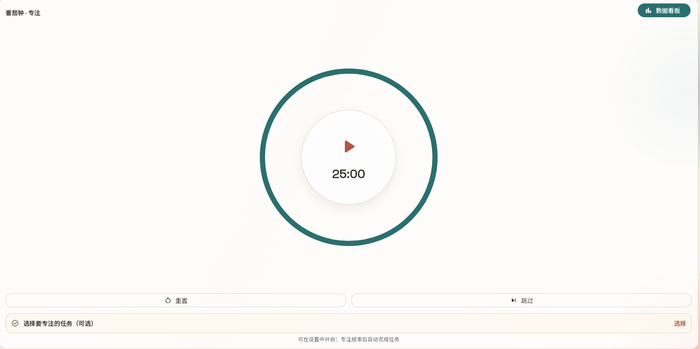
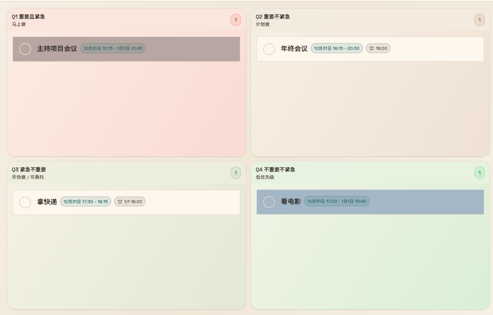
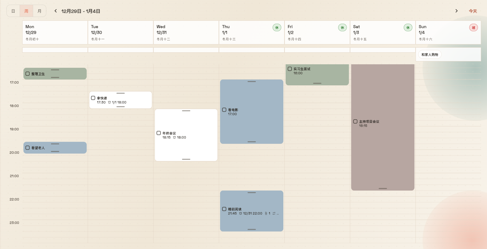
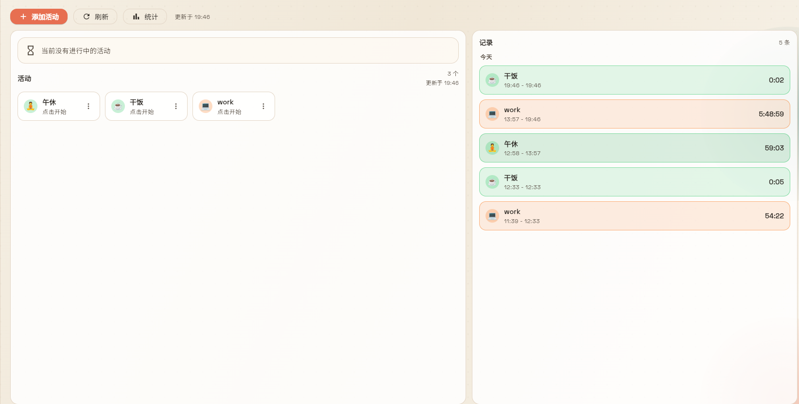
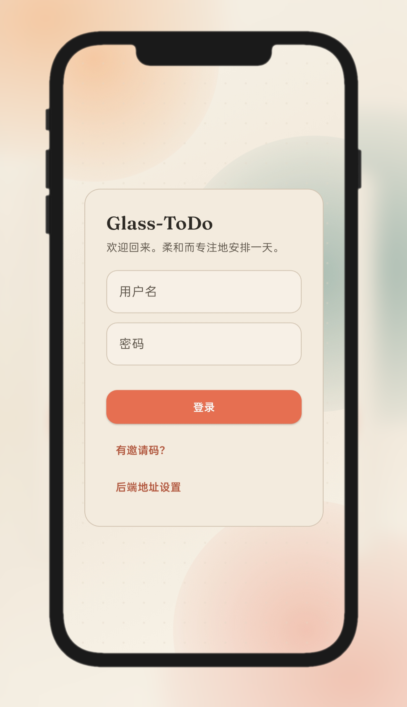

沉浸式番茄钟
一个时钟，一段专注。让仪式感成为你持续行动的动力。

用四象限把事情分层：重要/紧急一眼分明；用更少的切换，获得更稳定的执行节奏。

我们相信，好用的生产力工具应该是隐形的、无压力的。
一个时钟，一段专注。让仪式感成为你持续行动的动力。

掌控生活的旋律，像谱乐谱一样排期。

看见每一分钟的价值，生成精美报表。

无论在办公室的电脑，还是通勤时的手机，你的清单永远保持实时更新。

适合 NAS：配置好端口与数据目录，启动即可。
cd local_server/deploy
cp .env.docker.example .env.docker
# 编辑 .env.docker：HOST_PORT / HOST_DATA_DIR 等
docker compose --env-file .env.docker up -d
curl http://127.0.0.1:${HOST_PORT:-3000}/health
开始使用。